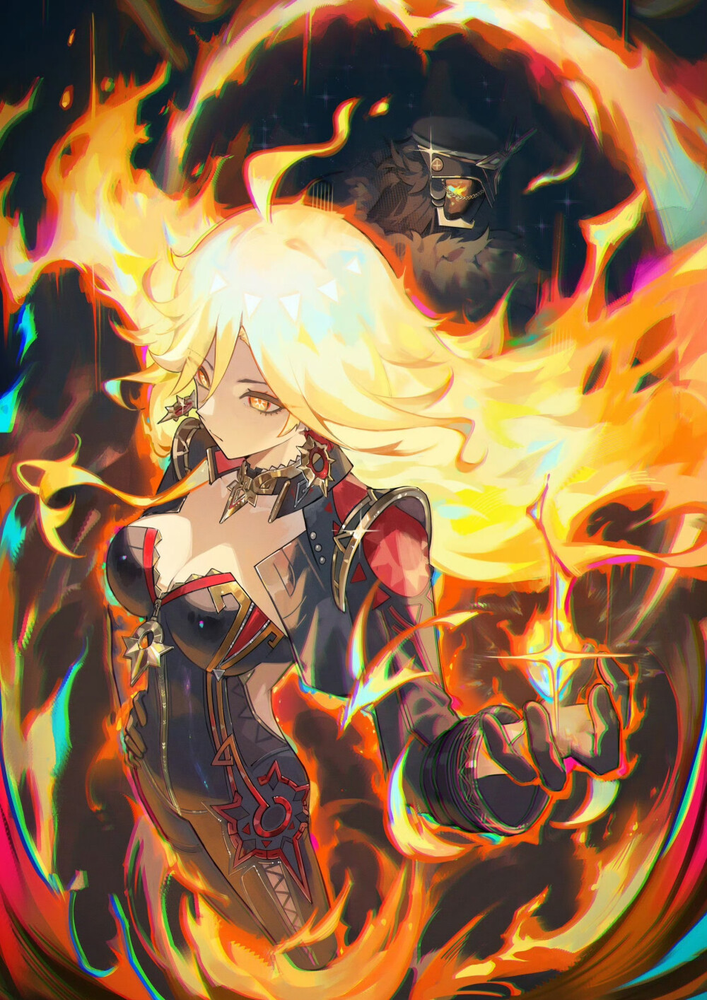

Birthday: Desconocido
Elemento: Pyro
Arma: Claymore
Región: Natlan
Mavuika es la Arconte Pyro y líder de Natlan. Hace quinientos años sacrificó su vida usando el poder de la muerte para detener una invasión del Abismo, renaciendo después con la misión de proteger su nación. Es una figura valiente, estratégica y profundamente devota a su pueblo, guiando a las seis tribus y enfrentándose tanto al Abismo como a Il Capitano durante la crisis de las Líneas Ley.
「La llama que guía no busca devorarlo todo. Arde para abrir camino a quienes todavía creen en el mañana.」 — Reflexión de Mavuika, mirando el Fuego Sagrado de Natlan.